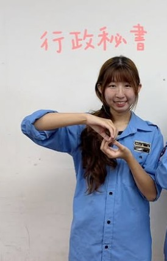
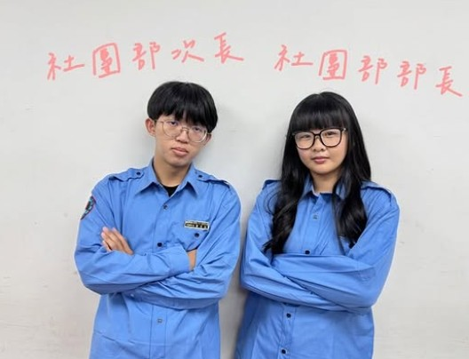
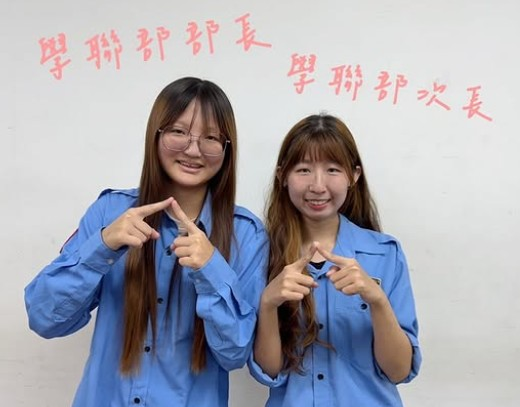
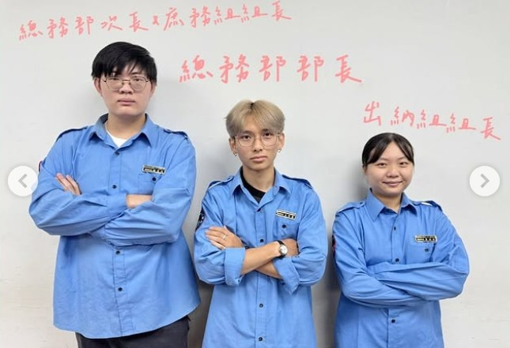
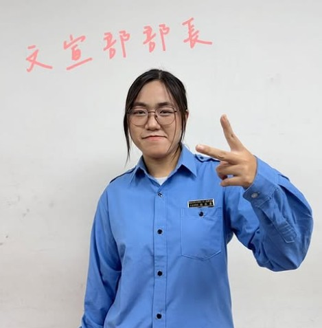
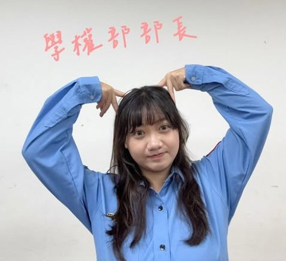
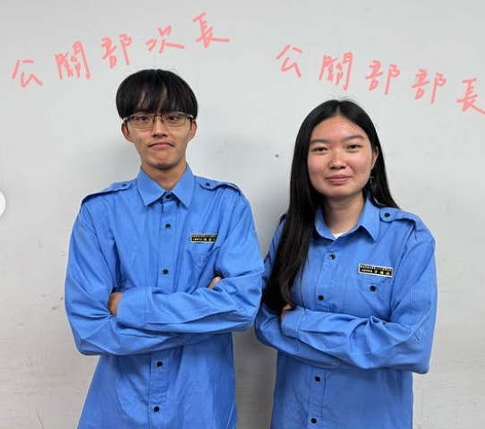
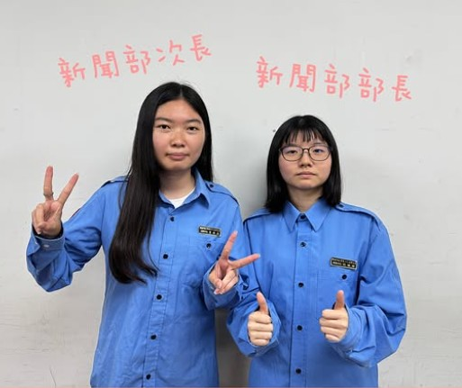

學生會介紹
學生會宗旨
- 實現學生自治理念，增進學生權益
- 培養學生民主素養與自主能力
- 作為學生與校方的溝通橋梁
- 整合校內外資源，推動校園活動
學生會簡介
國立勤益科技大學學生會由行政、立法、司法三權分立組成， 為全校最高學生自治組織，代表學生行使自治權利。
學生會亦負責社團與系學會行政管理， 並辦理各類全校性活動，促進校園和諧。
幹部介紹
陳柏成
內副會長
負責學生會內部事務、財務管理及活動規劃，協助會長工作。
張謦淇
會長
負責學校活動統籌、協調各部門，確保活動順利進行。
林芷芸
外副會長
負責對外事務與校外聯繫，協助活動推廣及合作事宜。
曹語倢
執行秘書
負責活動執行與行政協調，確保學生會各項事務順利運作。

張琳
行政秘書
負責會務文件管理及各項行政支援，協助內部運作。

社團部
部長-廖家曼
次長-黃宗佑
社團部
負責社團管理與活動統籌，協助學生參與校內社團事務。

學聯部
部長-張貝琳
次長-張琳
學聯部
負責學生代表事務及學生福利相關活動。

總務部
部長-王圻峯
次長-駱秉鈞
總務部
負責學生會資源管理及後勤支援。

林辰晏
文宣部
負責活動宣傳、校園媒體及資訊公告。

林芷芸
學權部
負責學生權益及申訴相關事宜，保障學生權益。
王振維
活動部
負責學生會活動規劃與執行，確保活動順利進行。

公關部
部長-方靖涵
次長-陳瑩彰
公關部
負責校內外聯絡及活動宣傳，維護學生會形象。

新聞部
部長-何姍珊
次長-方靖涵
新聞部
負責校園新聞撰寫及資訊發布，紀錄活動成果。
繳件規則
每學期期初與期末辦理，時間由學生會公告。
請於活動日前 2 週，繳交至學生會行政中心。
每周一到五 12:10~13:00
活動介紹
社團博覽會
活動介紹：為了讓全校師生更加了解社團，將各社團集合在一起，進行一個集體宣傳
新生茶會
活動介紹：藉由茶會讓新生可以了解到學生會的組織章程架構
海科大交流
活動介紹：藉由交流活動，可以與外校的學生會學習到各種辦活動的方法與訣竅
師生座談
活動介紹：藉由師生座談將學校的問題與解決方法與變動告知系會、社團及各班班代，也藉由此機會讓全校師生反映問題
社團評鑑
活動介紹：為了讓全校社團／系會展示一年成果並交流學習
校園演唱會
活動介紹：讓全校師生在校內就能欣賞演唱會，提升校園活力與知名度
社團博覽會
活動介紹：為了讓全校師生更加了解社團，將各社團集合在一起，進行一個集體宣傳
新生茶會
活動介紹：藉由茶會讓新生可以了解到學生會的組織章程架構
社團評鑑
活動介紹：為了讓全校社團／系會展示一年成果並交流學習
上學期師生座談會
活動介紹：藉由師生座談將學校的問題與解決方法與變動告知系會、社團及各班班代，也藉由此機會讓全校師生反映問題
校園演唱會
活動介紹：讓全校師生在校內就能欣賞演唱會，提升校園活力與知名度
小幹訓
活動介紹：讓未來接任學生會幹部的同學，去了解亙多的事情
學權週
活動介紹：讓全校師生藉由這個機會反映問題
脫口秀
活動介紹：讓全校師生在校內就能欣賞脫口秀，提升校園活力與知名度
下學期師生座談會
活動介紹：藉由師生座談將學校的問題與解決方法與變動告知系會、社團及各班班代，也藉由此機會讓全校師生反映問題
大幹訓
活動介紹：讓下年度要接任新幹部的同學去相互認識